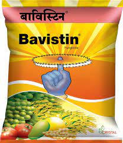

Prevention
Use of disease-free seeds that are selected from healthy crop.
Seed treatment with carbendazim 2.0g/kg of seeds. Control insect pests.
Split application of nitrogen is recommended.

Carbendazim
Back